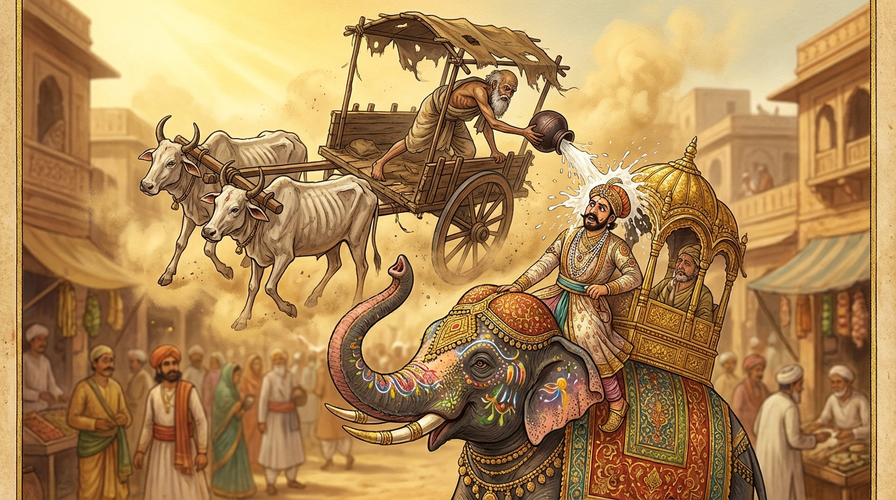

2. කෙළිසීල ජාතකය (202)
“හංසා කොඤ්චා මයූරා ච” (හංසයෝ ද කොස්වා ලිහිණියෝ ද මොණරු ද) යන මේ ධර්ම දේශනාව ශාස්තෲන් වහන්සේ ජේතවනයෙහි වැඩවසන සමයෙහි ආයුෂ්මත් ලකුණ්ඩක භද්දිය තෙරුන් අරබයා වදාළ සේක. ඒ තෙරුන් වහන්සේ බුදු සසුනෙහි මහා ප්රඥාවෙන් ප්රකට වූහ; මිහිරි කටහඬ ඇත්තාහ; මධුර ධර්ම කථිකයෙකි; සිව් පිළිසිඹියාවට පත් වූහ; අසූ මහා ශ්රාවකයන් අතර සිටි මහා රහතන් වහන්සේ නමක් වුව ද, උන්වහන්සේ ශරීර ප්රමාණයෙන් ඉතා මිටි ය; අවලස්සන ය; කුඩා සාමණේර නමක් මෙන් දිස් විය; විහිළු පිණිස නිර්මාණය කරන ලද්දක් බඳු විය. එක් දිනක් උන්වහන්සේ තථාගතයන් වහන්සේ වැඳ ජේතවන විහාරයේ දොරටුව වෙත වැඩි කල්හි, දසබලයන් වහන්සේ වැඳීමට පැමිණි විවිධ ජනපදවාසී භික්ෂූන් වහන්සේලා තිස් නමක් පමණ විහාර දොරටුව අසල සිටි තෙරුන් දැක, “මේ සාමණේර නමකි” යැයි සිතා, තෙරුන්ගේ සිවුරු කොනින් අල්ලා ගනිමින් ද, අත්වලින් අල්ලා ගනිමින් ද, හිස අතගාමින් ද, නාසය පිරිමදිමින් ද, කන් අල්ලා සොලවමින් ද හස්ත විකාර කොට (විහිළු කොට), පාත්ර සිවුරු පිළිගන්වා බුදුරජාණන් වහන්සේ වෙත එළඹ වැඳ එකත්පස් ව හිඳගත්හ. බුදුරජාණන් වහන්සේ ඔවුන් සමඟ මිහිරි ලෙස පිළිසඳර කතා කළ පසු, ඔවුහු මෙසේ විමසූහ: “ස්වාමීනි, ලකුණ්ඩක භද්දිය නම් වූ මිහිරි ලෙස බණ කියන ඔබවහන්සේගේ ශ්රාවකයෙක් සිටින බව අසන්නට ලැබුණි. ඒ තෙරුන් වහන්සේ දැන් කොහි සිටිත් ද?” “මහණෙනි, නුඹලා ඔහුව දකිනු කැමති ද?” “එසේය, ස්වාමීනි.” “මහණෙනි, නුඹලා දොරටුව අසල දී යමෙකු දැක, සිවුරු කොන් ආදියෙන් අල්ලා විහිළු තහළු කරමින් පැමිණියේ ද, ඒ සිටියේ ඔහු ය.” “ස්වාමීනි! මෙබඳු ප්රාර්ථනා ඇති, අභිනීහාර සම්පන්න වූ ශ්රාවකයෙකු කුමක් නිසා මෙසේ අල්පේශාක්ය ව (ශරීරයෙන් කුඩා ව) උපන්නේ ද?” එවිට ශාස්තෲන් වහන්සේ “තමා විසින් පෙර කරන ලද අකුසල් කර්මයක් නිසා ය” යි වදාරා, ඔවුන්ගේ ආරාධනයෙන් අතීත කථාව ගෙනහැර දැක්වූ සේක.
යටගිය දවස බරණැස් නුවර බ්රහ්මදත්ත රජු රාජ්ය කරන සමයෙහි බෝසතාණන් වහන්සේ ශක්ර දේවේන්ද්ර ව උපන් සේක. එකල බ්රහ්මදත්ත රජුට දිරාගිය, ජරාවට පත් වූ ඇතෙකු, අශ්වයෙකු හෝ ගොනෙකු හෝ පෙන්වන්නට නොහැකි විය. හෙතෙම කෙළිලොල් වූයේ, එබඳු සතෙකු දුටු විට ලුහුබැඳ ගොස් හිංසා කරයි. ඔහුගේ අනිත් ක්රියා කලාපයන් මෙසේ විය:
- දිරාගිය කරත්තයක් දුටු විට එය කඩා බිඳ දමයි.
- දිරාපත් ස්ත්රීන් දුටු විට ඔවුන් කැඳවා, බඩට ගස්සවා, බිම වට්ටවා, නැවත නැගිටුවා බිය ගන්වයි.
- දිරාපත් පුරුෂයන් දුටු විට ඔවුන් ලවා පිනුම් ගසන්නාක් මෙන් බිම පෙරළීම් ආදී ක්රීඩා කරවයි.
- තමා ඉදිරියේ නොදක්නා නමුත්, ‘අසවල් නිවසෙහි මහල්ලෙක් ඇතැයි’ අසා ද ඔවුන් ගෙන්වා ගෙන ක්රීඩා කරයි.
මේ නිසා මිනිස්සු ලජ්ජාවට පත් ව තමන්ගේ මව්පියන් වෙනත් රටවලට යැවූහ. මවට උපස්ථාන කිරීමේ සිරිතත්, පියාට උපස්ථාන කිරීමේ සිරිතත් සිඳී ගියේ ය. රාජ සේවකයෝ ද රජු මෙන් ම කෙළිලොල් වූහ. මිය යන අය (අකුසල් කොට) සතර අපාය පුරවති; දෙව් පිරිස පිරිහෙති.
ශක්ර දේවේන්ද්රයා අලුත් දේව පුත්රයන් පහළ නොවන්නේ මන්දැයි බලන්නේ, එම කරුණ දැන “මේ රජු දමනය කරන්නෙමි”යි සිතී ය. හෙතෙම මහලු වේශයක් මවාගෙන, දිරාගිය කරත්තයක කිරිමෝරු හැලි දෙකක් තබා, දිරාගිය ගොනුන් දෙදෙනෙකු ඊට යොදාගෙන, එක්තරා සැණකෙළි දිනයක අහසින් පැමිණියේ ය. බ්රහ්මදත්ත රජු සරසන ලද ඇතෙකු පිට නැගී අලංකාරවත් වූ නගරය පැදකුණු කරන කල්හි, ශක්රයා දිරාගිය වස්ත්රයක් හැඳ, ඒ කරත්තය පදවමින් රජුගේ ඉදිරියට පැමිණියේ ය. රජතුමා දිරාගිය කරත්තය දැක “මේ කරත්තය ඉවත් කරවු” යයි කීවේ ය. එවිට මිනිස්සු “දේවයන් වහන්ස, කොතැන ද? අපට නම් නොපෙනේ” යැයි කීවාහු ය. ශක්රයා තමන්ගේ ආනුභාවයෙන් එය රජුට පමණක් පෙනෙන ලෙස සැලැස්වූයේ ය. ඉක්බිති බොහෝ පිරිසක් පැමිණි කල්හි, ශක්රයා රජුගේ හිසට උඩින් කරත්තය පදවා, එක් කිරිමෝරු හැළියක් රජුගේ හිස මත බිඳ වැගිරෙව්වේ ය; කරත්තය හරවන විට අනෙක් කිරිමෝරු හැළිය ද බිඳ දැමුවේ ය. රජුගේ හිස පටන් ශරීරය පුරා කිරිමෝරු වැගිරෙන්නට විය. රජතුමා එයින් පීඩාවටත්, ලැජ්ජාවටත්, පිළිකුලටත් පත් විය. රජුට ඇති වූ ඒ පීඩාව දැනගත් ශක්රයා, කරත්තය අතුරුදහන් කොට, තම සැබෑ ශක්ර ස්වරූපය මවාගෙන, අතින් වජ්රය ගෙන අහසෙහි සිට රජු තැති ගැන්වී ය: “පාපී වූ අධර්මික රජතුමනි! ඔබ මහල්ලෙක් නොවන්නෙහි ද? ඔබේ ශරීරය ජරාවට පත් නොවන්නේ ද? කෙළිලොල් වී මහල්ලන්ට හිංසා කරන්නෙහි ද? මේ එක් අයෙකු නිසා කරන ලද පාප කර්මයෙන් මිය යන අය අපාය පුරවති. මිනිස්සුන්ට මව්පියන් පෝෂණය කිරීමට අවස්ථාව නොලැබෙයි. ඉදින් ඔබ මේ පාප කර්මයෙන් නො වළකින්නේ නම්, වජ්රයෙන් පහර දී ඔබේ හිස පළන්නෙමි. මෙතැන් පටන් මේ පව්කර්මය නොකරව!” මෙසේ රජු තැති ගන්වා, මව්පියන්ගේ ගුණ කියා දී, වැඩිහිටියන්ට සැලකීමේ ආනිශංස පවසා, අවවාද දී ශක්රයා සිය භවනයට ගියේ ය. රජතුමා ද එතැන් පටන් එවැනි පාප කර්මයක් කිරීමට සිතුවිල්ලක්වත් ඇති කර ගත්තේ නැත.

බුදුරජාණන් වහන්සේ මේ අතීත කථාව ගෙනහැර දක්වා, සම්මා සම්බුද්ධත්වයට පත් ව මෙම ගාථාවන් වදාළ සේක.
“හංසයෝ ද, කොස්වා ලිහිණියෝ ද, මොණරු ද, ඇත්තු ද, පසද මුවෝ සහ අනෙක් මුවෝ ද, යන මේ සියල්ලෝ සිංහයාට බිය වෙති; (එහි දී) ශරීරයේ ප්රමාණය පිළිබඳ තුලනයක් (සමාන බවක්) නැත.”
“එලෙස ම මිනිසුන් අතරෙහි ද, යමෙක් බාල (කුඩා) වුව ද ඔහු ප්රඥාවත් නම්, හෙතෙම ඒ තැනෙහි ශ්රේෂ්ඨ වේ; විශාල ශරීරයක් තිබුණ ද මෝඩ තැනැත්තා ශ්රේෂ්ඨ නොවේ.”
යනුවෙන් එම ගාථාවන් වදාළ සේක.
එහි පසදා මිගා යනු පසද නම් මුව විශේෂයයි; නැතහොත් පසද මුවෝ ද සෙසු මුවෝ ද යන අර්ථයි. නත්ථි කායස්මි තුල්යතා යනු ශරීරයේ ප්රමාණය පිළිබඳ සැලකීමක් නැත යන්නයි. ඉදින් ශරීර ප්රමාණය වැදගත් වී නම්, විශාල ශරීර ඇති ඇත්තු ද පසද මුවෝ ද සිංහයා මරා දමනු ඇත. සිංහයා හංසයන් ආදී කුඩා ශරීර ඇති සතුන් පමණක් මරනු ඇත. කුඩා ශරීර ඇති සතුන් පමණක් සිංහයාට බිය වනු ඇත; මහත් ශරීර ඇත්තෝ බිය නොවනු ඇත. නමුත් එබඳු නියමයක් නැති හෙයින් ඒ සියලු සත්තු සිංහයාට බිය වෙති. සරීරවා යනු මෝඩයා මහත් වූ ශරීරයක් ඇත්තෙක් වුව ද ශ්රේෂ්ඨ නොවේ. එබැවින් ලකුණ්ඩක භද්දිය තෙරුන් ශරීරයෙන් කුඩා යැයි සිතා, ප්රඥාවෙන් ද ඔහු කුඩා කෙනෙකැයි නො සිතන්න යන අර්ථයි.
බුදුරජාණන් වහන්සේ මේ ධර්ම දේශනාව ගෙනහැර දක්වා, චතුරාර්ය සත්යය ප්රකාශ කොට ජාතක කථාව නිමවා වදාළ සේක. සත්ය දේශනාව අවසානයෙහි ඒ භික්ෂූන් අතුරෙන් සමහරෙක් සෝවාන් වූහ; සමහරෙක් සකදාගාමී වූහ; සමහරෙක් අනාගාමී වූහ; සමහරෙක් රහත් වූහ. “එකල රජතුමා වූයේ මේ ලකුණ්ඩක භද්දිය තෙරුන් ය. ඔහු එදා ඒ කෙළිලොල් බව නිසා (මහලු අයට විහිළු කළ නිසා), අද දින අන් අයගේ විහිළුවලට භාජනය විය. ශක්රයා වූයේ ලොව්තුරා බුදු වූ මම ම වෙමි”යි වදාළ සේක.
කෙළිසීල ජාතක වර්ණනාව නිමා විය.